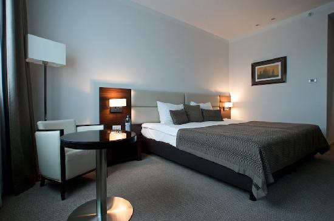
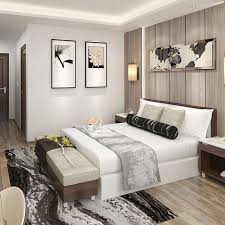
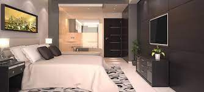

Welcome to our accomodations page
We have a most exciting range of modern rooms for you to choose from. Whether you are looking to rest and recharge, or simply need somewhere to crush at after a night of wild partying, Tulia Resort has got you covered.
Aristos
The swanky Arisots Modern room for the traveller who wants the best of comfort and luxury.

D'elegance
Elegance has a face when it comes to hotel rooms, and this is perfect for the traveller who does not want to skimp
on style during their trips.

Tulia Suite
Tulia means 'Calm' in Swahili, and Tulia Suite is meant to offer a calm experience away from the hustle and bustle
of city living. Writers have claimed to churn some amazing ideas here when they come for their writing retreats.

Whistle Away
Whistle Away is a delightful getaway when you need to rest and recharge. Its minimalistic design, coupled with
views that are to die for makes it a favorite amongst our visitors.
